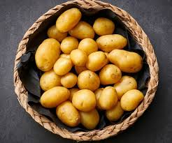

Las papas fritas fuero inventadas por accidente. Se dice que en
1853, en un restaurante de Nueva York llamado Moon's Lake House, un
cliente se quejó de que las papas que le sirvieron eran demasiado
gruesas. El chef, George Crum, para molestar al cliente, cortó las
papas extremadamente finas, las frió hasta que estuvieron crujientes
y las sirvió. Sorprendentemente, al cliente le encantaron, y así
nacieron las papas fritas tal como las conocemos hoy.
que es?
datos curiosos
recetas con este ingrediente

papas
datos nuticionales
| Calcio (mg) | 12 | Humedad (g) | 79 | Tiamina (mg) | 0.11 | Grupo de alimentos | Vegetales |
| Hierro (mg) | 0.81 | Energía (Kcal) | 77 | Riboflavina (mg) | 0.03 | Nombre | Papa o Patata |
| Sodio (mg) | 6 | Energía (Kj) | 322 | Niacina (mg) | 1.06 | Género | Solanum |
| Fósforo (mg) | 57 | Proteína (g) | 2 | Folatos (mcg) | 9 | Especie | tuberosum |
| Yodo (mcg) | 0 | Lípidos (g) | 0.1 | Vitamina B12 (mcg) | 0.00 | Otros nombres | Patata |
| Zinc (mg) | 0.29 | Carbohidratos totales (g) | 17 | Vitamina C (mg) | 19.7 | ||
| Magnesio (mg) | 23 | Carbohidratos Disponibles (g) | 15.4 | Vitamina A (IU) | 2 | ||
| Potasio (mg) | 425 | Fibra Dietaria (g) | 2.2 | Vitamina E (mg) | 0.01 |